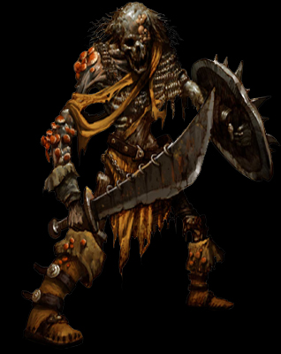
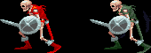

|
|
Skeleton |
|  |
이들은 그저 살아 움직이는 해골로 보인다.
퀭한 눈구멍 안에선 붉은 작은 빛이 타오른다.
룰 상에서의 묘사
스켈레톤은 그들을 부활시킨 악한 주인의 명령에 복종하는,
마치 마음이 없는 로봇같은 해골이다.
죽을 당시 입고 있던 닳고 닳은 옷이나 갑옷이외에는 걸치고
있는 것이 없다. 이 해골들은 오로지 명령받은 일만 행한다.
스스로 결론을 내리거나 창의력을 발휘하지 못한다.
그렇기 때문에 명령은 항상 간결해야 한다.
예를 들면 "이 방에 들어오는 자는 누구든 죽여라"처럼.
만들어진 목적을 위해서 파괴될 때까지 공격을 한다.
※ 인간뿐만 아니라 골격을 가지고 있는 다른 생물들도
스켈레톤이 될 수 있다(20HD이상의 생물은 불가능).
트롤이나 아울베어도 가능하며 심지어는 용도 가능하다. |
|
| |
기본 정보
|
| 평균 HP |
62~70 - 떡갈나무 요새(6) 이전 / 140 - 떡갈나무 요새(6) 이후 |
|
|
| 격파시 획득 XP |
600 |
|
|
| 등장 스테이지 |
붉은색 : 트린턴 마을(2) / 에잉모어 상공(4) / 절망의 숲(5-A) ~ 떡갈나무 요새(6) /
놈 마을 구조(8-B) / 게이트 웨이(10-1) / 아레나(10-3) / 아레나 재방문(10-5)
녹색 : 절망의 숲(5-A) ~ 떡갈나무 요새(6) / 놈 마을 구조(8-B) / 게이트 웨이(10-1) |
|
|
| 드랍 가능한 아이템 |
없음 |
|
|
| 스틸 가능한 아이템 |
없음 |
|

녹색과 붉은색의 두종류가 나오는데
일부 패턴이 약간 다르다. |
|
판타지 게임에서 가장 흔하게 등장하는 언데드 몬스터.
행동이 느리기 때문에 대처하기 어렵지 않은 적이다.
그러나 공격자체는 꽤 빠르고 강력하니 방심할 수는 없다.
점수도 낮고 물리쳐도 아이템을 주지 않으며 또한 다른 몬스터들과는
달리 대부분 스테이지 진행에 방해가 되지도 않아서 굳이 싸울 필요는
없다. |
|
| |
패턴 분석
등장 방식
2~4마리가 땅을 파해치며 나온다. 가끔 녹색과 붉은색이 섞여 나오기도 한다.
상자에 설치된 함정 중 'GAS'가 나오면 그 주변에서 3마리가 기어나오기도 한다. 이때는 붉은색만 나온다.
움직임의 패턴
한걸음씩 끊어서 느리게 움직인다. 그리고 일단 걸음을 때면 방향 전환을 거의 하지 못하며 한다해도 매우 느리다.
산만하게 대각선 이동을 하는 편이며 거의 모든 이동이 느리지만 가끔씩 위아래로 빠르게 점프를 해서 이동하는 경우
도 있다. 녹색 스켈레톤의 경우 가깝게 붙으면 공격 대신 거의 대부분 가드를 한다.
공격 패턴
| 스테이지 |
트린턴 마을(2) |
그 이후 |
| 평균 데미지 |
18 / 22 |
19 / 27 |
|
※ 붉은색은 파이터가 입는 데미지, 푸른색은 매직 유저가 입는 데미지.
클레릭/드워프는 파이터에 가까운 데미지를, 시프/엘프는 매직 유저에
가까운 데미지를 입는다. |
참고사항
언데드이기 때문에 클레릭의 턴언데드로 한번에 물리칠 수 있다.
대처법/주의점
녹색 스켈레톤은 접근만 하면 가드를 하기 때문에 클래스에 따라 물리치기가 조금 난감할 수 있다.
드워프는 적당히 대공기를 구사해주면 쉽게 잡을 수 있다. 시프는 슬링을 쓰거나 백스텝을 쓰는것이 편하다.
나머지 클래스는 슬라이딩으로 재빠르게 뒤를 잡거나 대쉬 부딛히기로 가드를 푼 다음 공격하자.
아니면 가지고 있는 단검/화살로 가드를 푼 후 공격해도 된다(투척 무기는 가드가 불가능 하다).
그러나 스코어 어택이 아니라면 싸워서 득될것은 하나도 없다. |
| |
| go to Top |
| 2007 Crassus & legon. All rights reserved. |